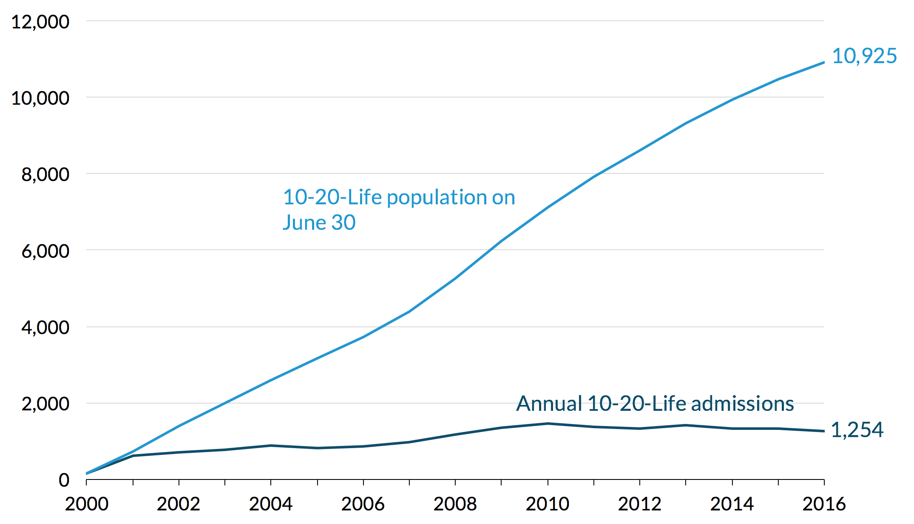
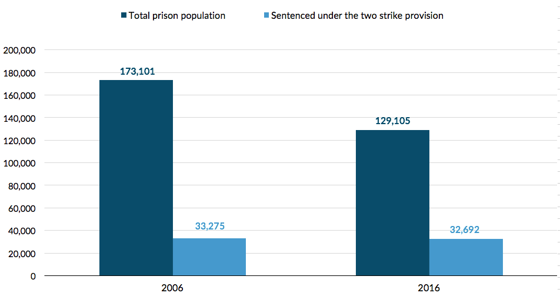
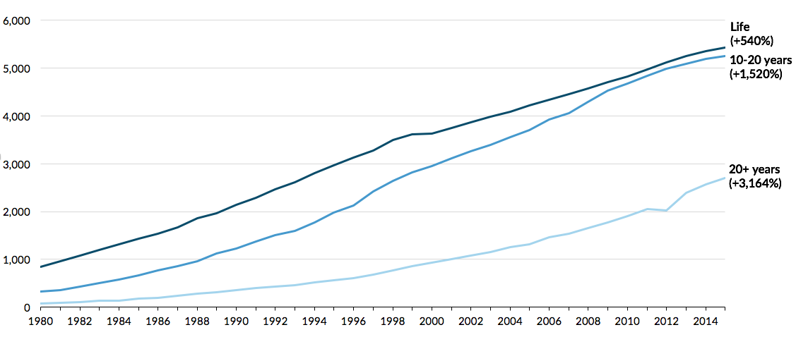

The pursuit of increasingly harsh sentencing policies eclipsed other goals of the justice system, like proportionality and parsimony—in other words, that the punishment should fit the crime and should be no stricter than necessary. The modern era of sentencing may have been born of a desire for greater consistency and certainty, but it came to be defined by its severity.
The strategy of trying to get crime prevention by locking people up for very long periods of time is not well-founded. It never was. Never had any empirical basis, but it had an intuitive basis at a time when many people felt that we were facing a zombie apocalypse of crime where unchangingly scary, bad, high-rate offenders would be in our midst unless we did something about it.
States enacted these punitive changes at the front and back ends of the criminal justice system. At the front end—when people first enter the system—policy changes made sentences longer for a variety of crimes. Many states adopted determinate sentencing schemes that established fixed penalties and left judges powerless to consider the circumstances of each case. Tougher sentences undermined the important goals of proportionality and parsimony, allowing people to be punished severely for even low-level crimes.
At the back end are release policies that affect people already in prison and how long they’ll stay. Many states increased the minimum amount of a sentence people must serve and removed or restricted release options like parole. By erasing opportunities to earn an earlier release, these policies removed incentives for people to undergo the transformative personal growth that prevents reoffending.
Jonathan Simon
How political and social forces set the stage for tough-on-crime policies
Policymakers pursued their tough-on-crime agenda by enacting laws—many still on the books today— that handed down long sentences for a wide range of offenses. Some states changed their laws to make offenses eligible for prison time that had previously been punished with community supervision. Others changed sentencing thresholds to lower the quantity of drugs or value of stolen property required to trigger longer sentences.
Often, the sentences allowed under these new laws were disproportionately long compared to the severity of the crime. In some states, broad sentencing ranges put into effect for certain offenses gave judges considerable freedom to hand out harsh punishments. In Utah, for instance, first-degree felonies now carry a minimum sentence of 5 years with a maximum of life. In Louisiana, the penalty for armed robbery ranges from 5 to 99 years.
Experts suggest that longer sentences became the norm for all types of offenses partly because of a growing acceptance of severe sentences for the most serious crimes. These sentences have set an unprecedented standard of punishment in the modern era and normalized harsh penalties for other offenses.
Certain crimes or circumstances can automatically trigger mandatory sentence increases (for example, if an offense is gang-related or committed near a school). These rules can require judges to hand out a longer sentence even if they don’t think one is warranted. Further, these sentencing enhancements tend to disproportionately affect communities of color, exacerbating racial disparities.
As crime and public safety became more of a kitchen-table issue, lawmakers promoted “tough-on-crime” policies directly to voters with memorable slogans like “three strikes and you’re out,” “seven deadly sins,” or “truth in sentencing.”
Jonathan Simon
The appeal of slogan-based crime policies
Florida enacted a 10-20-Life law in 1999 that triggered long mandatory sentences for people convicted of certain crimes involving a firearm. Simply pulling out a gun could earn someone 10 years; firing it, even as a warning shot, could earn them 20. Judges were not allowed to make exceptions.
Even though the number of people sentenced each year under this enhancement stayed fairly steady, the total number of people in prison serving 10-20-Life sentences skyrocketed because so few are released each year. As new people enter, this group continues to stack up.
Though policymakers reformed the 10-20-Life law in 2016 to eliminate the mandatory minimum sentence for aggravated assault, about 1 in 10 people in Florida prisons today—nearly 11,000 people—was sentenced under this law.
Florida prison admissions under the 10-20-Life Law

Spurred by high-profile crimes committed by people who had been released from prison, calls for harsher punishments for repeat offending ushered in a wave of legislation, such as California’s Three Strikes law, that ratcheted up penalties for subsequent convictions. The public, convinced that dangerous people were cycling in and out of prison, embraced these laws despite a lack of evidence that they would help reduce crime.
Though it was not the first state to adopt such a policy, California’s notorious Three Strikes law stands out as one of the most extreme examples. Enacted in 1994, the law doubled the penalty for a second felony if the first was violent and triggered a sentence of 25 years to life for any third felony, even petty theft.
A 2012 ballot initiative (Proposition 36) reformed the law to prevent less serious crimes from triggering a third-strike life sentence and included a retroactivity clause that allowed more than 3,000 people in California prisons to petition for reduced sentences. It did not, however, reform the law for people with more serious third-strike offenses, including some drug crimes, nor did it change the second-strike provision.
Today, “second strikers” continue to receive long sentences. Even as reforms to reduce overcrowding caused California’s total prison population to drop by 25 percent from 2006 to 2016, the number of people serving a second-strike sentence has held steady.
These mandatory sentencing laws have caused a major shift in the makeup of California’s prison population. In 2006, a fifth had been sentenced for a second strike. Today, second strikers make up a full quarter of the state’s prison population.
California’s two-strike policy has been immune to reform

California was not the only state to adopt this type of mandatory minimum sentencing. States like Georgia, Tennessee, and South Carolina also have extreme two-strikes policies that require mandatory life sentences without parole for certain second offenses.
Jonathan Simon
California embodied the national policy shift to extreme sentencing over the past few decades
Historically, people in prison could get time off their sentences by maintaining clean disciplinary records or participating in programs. Parole boards traditionally weighed these factors and other signs of personal transformation when deciding who to release. Early release credits were so integral to state sentencing structures that judges made sentencing decisions knowing that people could earn time off.
A wave of legislation in the 1980s and ’90s, however, limited or eliminated these “good time” or “earned time” credits. Many states adopted determinate sentencing structures and truth-in-sentencing laws that required people to serve a set percentage of their minimum sentence, regardless of their behavior in prison. In these states, the amount of time people spent in prison was dictated at the moment of sentencing, leaving little flexibility to account for a person’s personal growth over the years spent in prison. By the turn of the century, 41 states and the District of Columbia had adopted some form of truth-in-sentencing law.
Michigan’s truth-in-sentencing law is one of the nation’s most extreme, requiring people to serve 100 percent of their minimum sentences in prison. The 1998 law barred people convicted of certain serious offenses from earning credits to reduce their time served. By 2000, that rule applied to everyone entering Michigan prisons.
These changes drove up the time served by people who might otherwise have earned credits for good conduct. Michigan’s stringent release policies have helped make it one of the states with the longest average time served.
Truth in sentencing in Michigan meant the end of any sentence reduction credits
By the turn of the century, 21 states had abolished or seriously restricted parole eligibility for many offenses. Parole boards, in the states where they were retained, became less likely to release people who had served their minimum sentences. Newly punitive attitudes and widespread skepticism about the possibility of rehabilitating people in prison meant that many people, especially those with the most serious convictions, found parole beyond their reach no matter what they did.
Even the opportunity to appear before a parole board for consideration became less likely, as statutory changes in some states made people wait longer for their next hearing after being denied. As the size and makeup of parole boards changed, so did the prospects for parole-eligible people to have their cases heard. Because most board members are selected by state governors and legislatures, the composition and behavior of a board can shift quickly based on state politics, leading to sudden and marked changes in parole rates that have nothing to do with the people being considered for parole.
Parole policies and practices are often extremely reactive, responding quickly to incidents that grab the public’s attention. High-profile crimes committed by people on parole raise the perceived political stakes of granting parole to others. Risk-averse parole boards may simply prefer not to grant parole rather than take a chance that someone they release will reoffend.
There was a real fear of rising levels of violence, sometimes crystallized in very spectacular and highly publicized incidents that weren’t necessarily normative in any sense but captured for people a sense that they were living in a society that had lost its basic control over violence.
Jonathan Simon
Pennsylvania’s decline in commutations for life-sentenced people in the 1990s was prompted in part by headline-grabbing crimes committed by one person released on parole. In Arkansas, similar circumstances led to a sharp rise in parole revocations and a spike in the prison population.
In some cases, states have avoided these consequences by taking a more measured response to such incidents. Although Pennsylvania initially responded to a murder in 2008 by instating a moratorium on parole, it conducted a study of its parole policies and determined that they were still largely safe and effective. Pennsylvania reinstated parole the next year. During the brief moratorium, the state’s prison population swelled.
The number of people serving life sentences has more than quadrupled since 1984 and has risen most sharply for those with no possibility of parole. As of 2016, one in nine people in prison was serving a life sentence. When virtual life sentences—those that exceed a person’s likely lifespan—are included, that figure increases to one in seven.
Before the 1970s, few served the entirety of a “life” sentence, and life without parole existed in only seven states. It has since been adopted in every state except Alaska, and parole for life sentences has become much less common. And over the past few decades, more and more life sentences have been given to people convicted of crimes other than murder, including nonviolent offenses.
This rapid shift reflects a modern sentencing reality that favors indefinite imprisonment over rehabilitation. After the US Supreme Court temporarily banned the death penalty in 1972, the popularity of life without parole sentences exploded as states sought alternatives to capital punishment. Today, the United States remains one of a minority of countries that sentence people to life without parole.
Barbara Levine
Life sentences are not only for the worst of the worst
Reflected in the views of many prosecutors, and eventually legislators and others…was an embrace of this simple idea that if prison can’t do anything else—if it’s a failure at all the other things we promised to do—its walls and its bars can certainly keep us safe from the people that we’re most afraid of.
Jonathan Simon
No one with a life sentence in Pennsylvania is eligible for parole. As one of the first states to adopt sentences of life without parole, Pennsylvania has the second-largest population serving such sentences in the country. One in 10 people serving life without parole in a state prison is incarcerated in Pennsylvania.
Before 1980, Pennsylvania governors often commuted life sentences to 20 years, but this practice has slowed nearly to a halt. In recent decades, the number of people serving sentences longer than 10 years has grown twice as quickly as the number of people serving sentences of 10 years or less. Over time, people with sentences longer than a decade steadily grew from 15 percent of Pennsylvania’s prison population to 27 percent.
Pennsylvania standing prison population by minimum sentence length, 1980–2015

![A line chart demonstrating trends in parole approvals and denials in Michigan, from 1985 to 2015. Both parole approvals and denials rose steadily from 1985 to 1992, approvals from 3,856 to 10,664 and denials from 2,694 to 5,021. In 1992 there was a reorganization of the parole board. From 1992 to 2009 approvals rose somewhat steadily from 11,854 to 16,695, and denials rose, with some periods of decrease, from 7,553 to 10,044. In 2009 there was an expansion of the parole board. From 2009 to 2011 parole denials decreased somewhat steadily from 10,044 to 5,907. Parole approvals spiked in 2010 to 12,178, then decreased to 11,265 in 2011. In 2011 there was a restoration of the previous parole board structure. From 2011 to 2015 parole approvals decreased slightly from 11,265 to 10,664, and parole denials decreased slightly from 5,907 to 5,021.](img/graphs/policies-line-2.png)